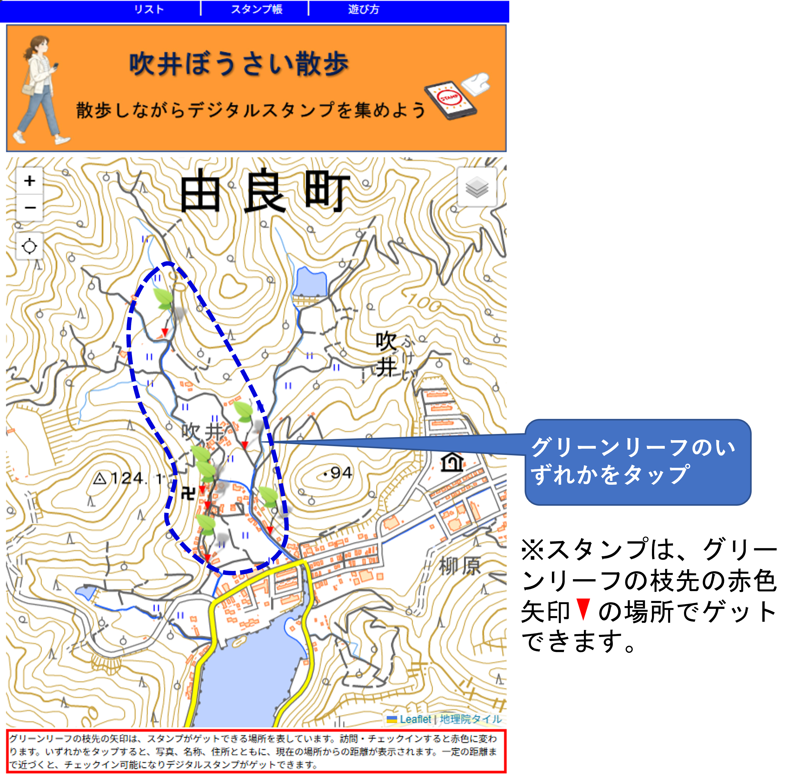
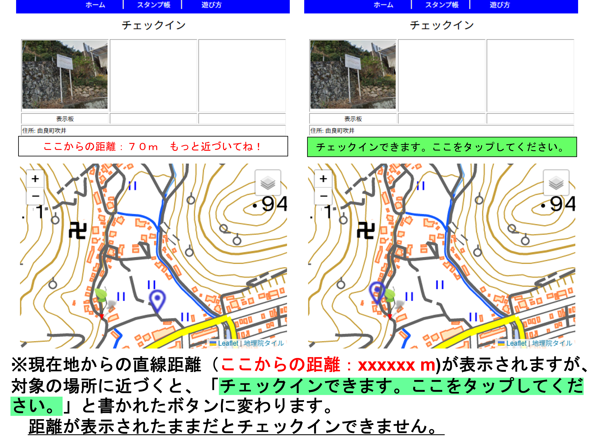
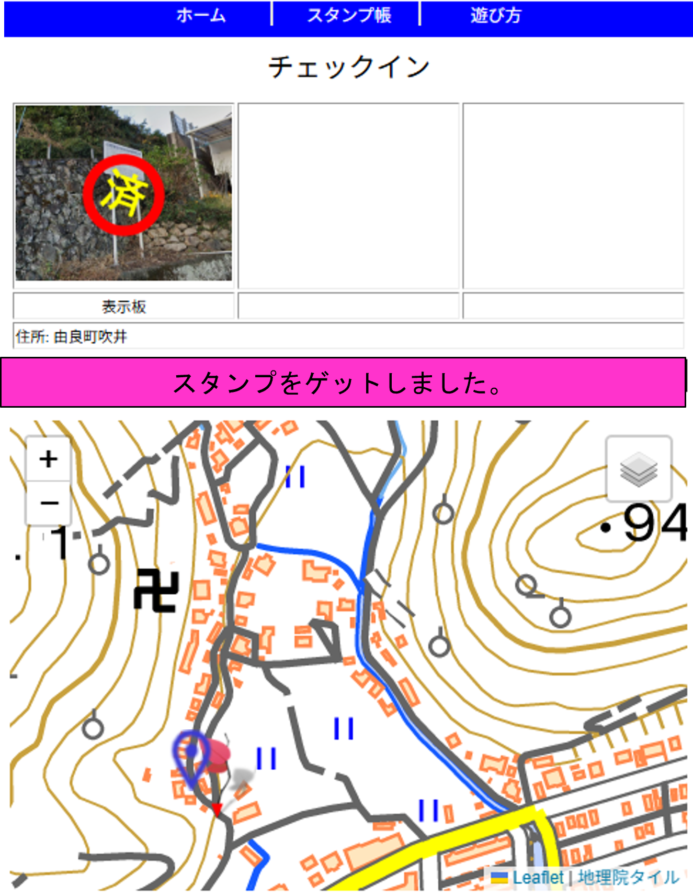
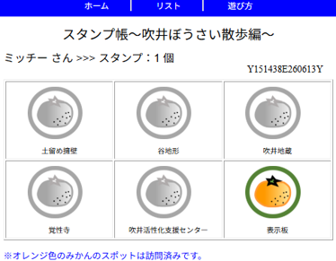
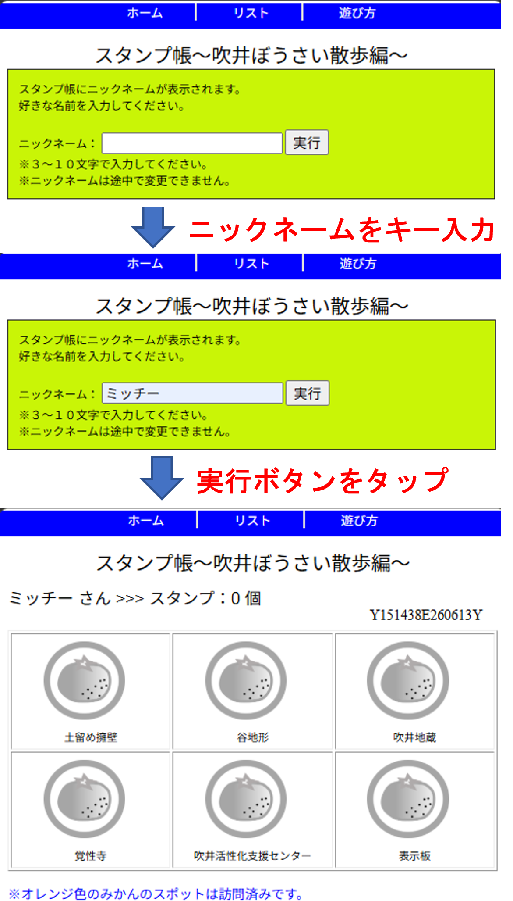
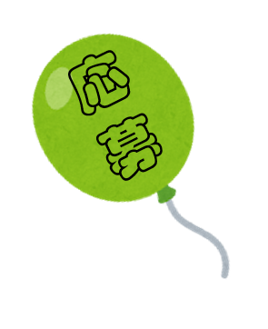

つぎに示す地図上のグリーンリーフ（緑の葉）の枝先は、スタンプがゲットできる場所を表しています。

いずれかをタップすると写真と名称が表示されます。また、現在地からの距離も表示されます。
近くまで行けば、チェックインが可能となり、距離表示の部分が緑色の「チェックインできます。ここをタップしてください。」のボタンに変わります。

この緑色の「チェックインできます。ここをタップしてください。」と書かれたボタンをタップすると、つぎの図のように、「スタンプをゲットしました。」の表示に変わります。
このようにしてデジタルスタンプをゲットできます。

ゲットしているデジタルスタンプは、スタンプ帳で確認できます。

なお、スタンプ帳には「ミッチー」のようなニックネームが表示されます。スタンプ帳を初めて閲覧する際、入力フォームが表示されるので、ニックネームを以下のように作成してください。

※注意：
1)スマートフォンの位置情報へのアクセスを可能にしておいてください。
2)使用するスマートフォンやブラウザをかえると、過去にゲットしたデジタルスタンプは反映されません。
3)ブラウザはGoogle Chrome, Apple Safari, Microsoft Edge, Mozilla Firefoxで動作確認をしていますが、ブラウザのバージョンによっては動作しない可能性もあります。
ただし、Apple Safariをブラウザとして利用している場合、ブラウザの仕様で、サイトにアクセス後７日間ユーザーの操作がない場合、保存したデータが削除されてしまう可能性があります。その場合、獲得したスタンプが消えてしまい、復活できません。ご留意ください。スタンプ帳を適宜スクリーンショットして保存しておくことをお勧めします。

洞川地蔵等のスポット6か所を巡り、スマホで黄色のみかん6個を集めた方(吹井区区民とその別居家族)で、先着100名様に由良町指定ごみ袋(500円分)をプレゼントします。景品の引換えは、スマホ1台につき１回限りです。
岩崎商店でスマホのスタンプ帳の画面を提示のうえ、お名前をご記入いただき、お受け取り下さい。
さらに、本「ぼうさい散歩」と防災研修会(１０月末～１１月中旬開催予定)の両方に参加された方を対象に、研修会当日の抽選会で平佐館お食事券(５,０００円分)を１０名様にプレゼントします。どうぞお楽しみに!!